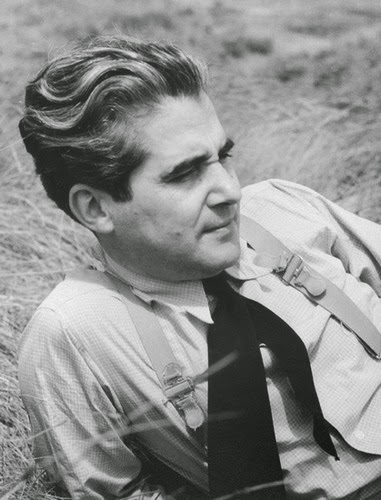

BENTO DE JESUS CARAÇA

BENTO DE JESUS CARAÇA
_______________________
Bento de Jesus Caraça, uma das figuras mais proeminentes do panorama cultural, científico e político português do século XX, revelou ao longo de sua vida uma personalidade marcada pela profunda erudição, pela defesa intransigente dos ideais humanistas e por uma coragem intelectual rara em tempos de repressão. Nascido em 1901 em Vila Viçosa, numa família humilde, Caraça construiu uma trajetória que o tornou símbolo de resistência cultural e intelectual contra o obscurantismo e a censura do regime salazarista. Central à personalidade de Caraça estava o seu humanismo universalista.
HUMANISMO E ÉTICA DE COMPROMISSO
Essa visão transparece em sua obra mais célebre, Conceito de Cultura, onde argumenta que a cultura deve ser acessível a todos os estratos sociais e que o desenvolvimento intelectual do indivíduo está intimamente ligado ao progresso da humanidade como um todo. A ética de compromisso que o movia era intrínseca ao seu caráter: ele não via a ciência, a matemática ou a cultura como domínios isolados, mas como partes de um todo maior, que deveria contribuir para a construção de uma sociedade mais justa. Esse espírito integrador refletia-se em sua atuação como professor no Instituto Superior de Ciências Económicas e Financeiras, onde era admirado não apenas pelo conhecimento que transmitia, mas pela forma apaixonada e inclusiva com que o fazia.
O INTELECTUAL ATIVISTA
Caraça não era apenas um acadêmico brilhante; era, sobretudo, um intelectual engajado. Ele compreendia que o conhecimento era uma forma de resistência e que sua disseminação era um ato político. Como membro destacado do Movimento de Unidade Democrática (MUD) e crítico feroz da censura e da repressão, ele utilizou sua posição de prestígio para promover a liberdade de pensamento e a solidariedade entre os povos.
Essa postura ativista teve custos elevados. Perseguido pela PIDE, viu-se afastado do ensino e viveu sob constante vigilância. Contudo, sua determinação em lutar por uma sociedade mais livre jamais se abalou. O seu envolvimento em iniciativas como a Biblioteca Cosmos, que democratizou o acesso a obras científicas e literárias, demonstra a profundidade do seu compromisso com a educação como motor de transformação social.
UMA FIGURA MULTIDIMENSIONAL
A personalidade de Bento de Jesus Caraça era multidimensional, marcada por uma combinação de rigor intelectual, sensibilidade humanista e coragem cívica. Ele transitava com facilidade entre o mundo abstrato da matemática, onde se destacava como pesquisador e professor, e o mundo concreto da ação política e social. Essa união de qualidades fazia dele não apenas um homem de ideias, mas um homem de ação, profundamente consciente do impacto que suas escolhas tinham sobre aqueles ao seu redor.
INSPIRAÇÃO
Embora tenha falecido precocemente em 1948, o legado de Caraça permanece vivo. Ele nos inspira a compreender que o verdadeiro intelectual é aquele que não apenas contempla o mundo, mas trabalha ativamente para transformá-lo. Sua vida é um testemunho de como a busca pelo conhecimento e a luta pela justiça podem andar de mãos dadas, e sua memória continua a iluminar o caminho daqueles que acreditam em um futuro mais justo e humano. Essa complexidade de caráter – a fusão entre o erudito e o militante, entre o pensador e o homem de ação – faz de Bento de Jesus Caraça uma figura singular e inesquecível na história cultural e política de Portugal.